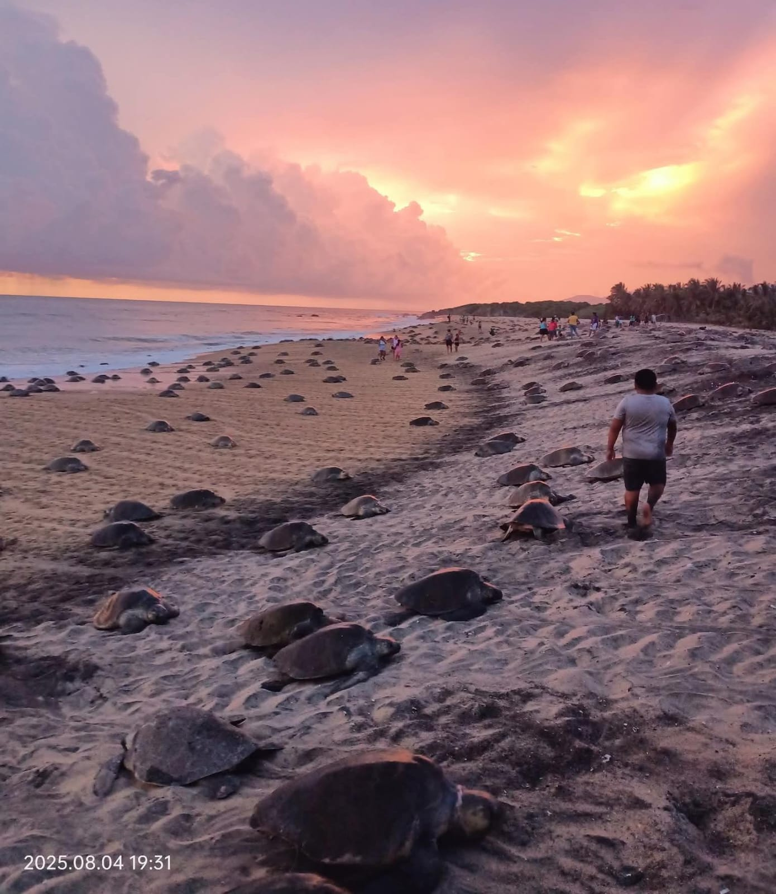
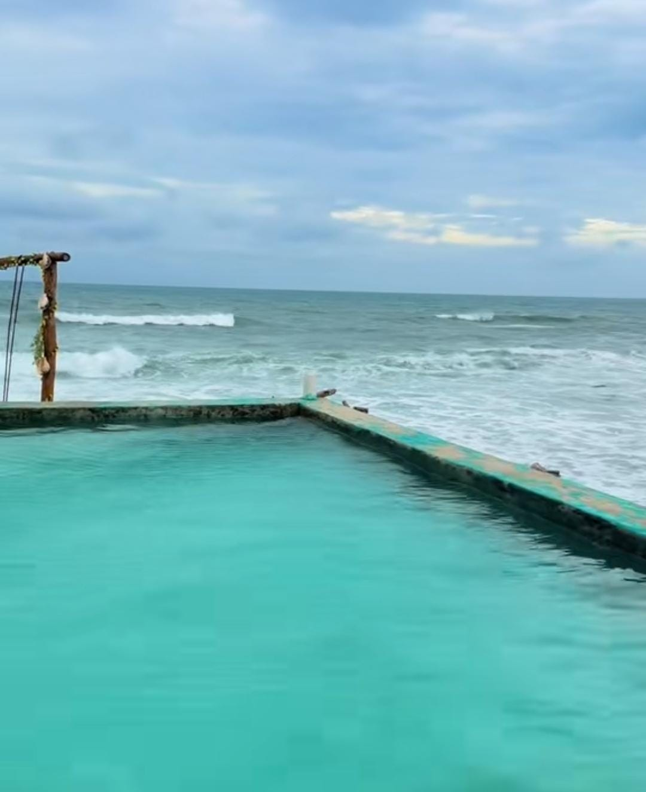
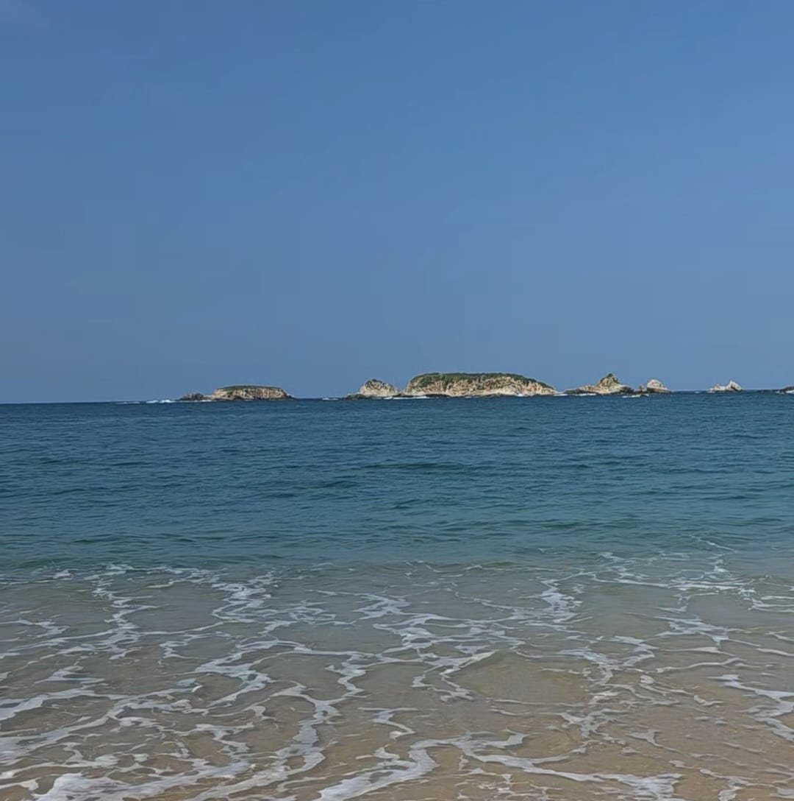
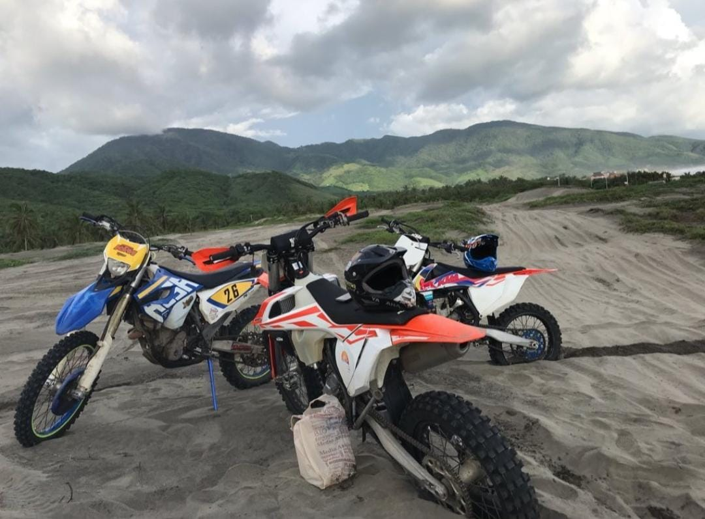

Playa Ixtapilla
Liberación de tortugas
Vive la experiencia de presenciar el arribo masivo de la tortuga golfina en la playa Ixtapilla

Zapote de Madero
Albercas Marinas
Disfruta de un espacio de baño natural que te ofrece la experiencia del océano en un entorno controlado y seguro, ideal para relajarse y nadar.

Faro de bucerías
Visita Isla Pelicanos
Visia Isla Pelicanos en un tur en lancha, donde podrás disfrutar de playas tranquilas, naturaleza y la fauna del lugar.

San Juan de Alima
Dunas y OffRoad
Vive la experiencia extrema en la zona de Dunas, renta un vehiculo OffRoad y disfruta de esta gran experiencia